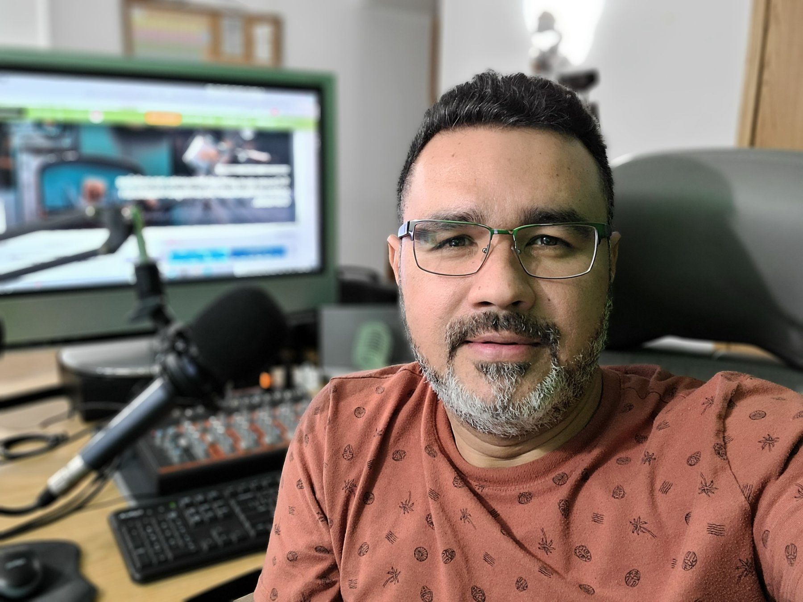
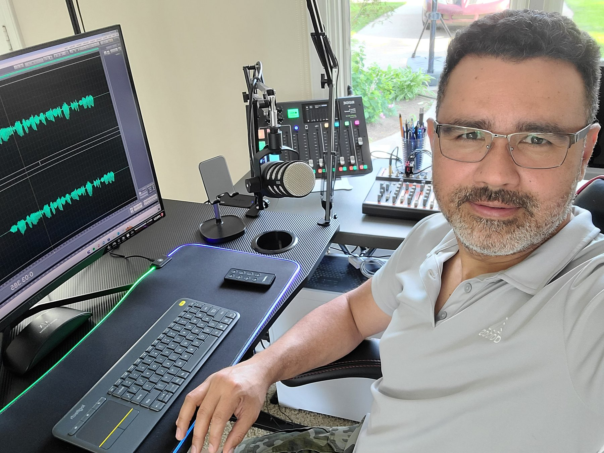

“No salí de Colombia porque hubiera dejado de amarla. Salí porque amaba demasiado a mi familia para continuar viviendo con miedo.”
Salir para proteger a quienes amas
Hay momentos en los que uno no abandona su país porque dejó de amarlo. Se marcha precisamente porque ama demasiado a su familia y no está dispuesto a seguir viviendo con el temor de que algo pueda suceder.
Tuve que salir de Colombia por uno de los grandes flagelos que hemos atravesado durante décadas: la inseguridad. Vivir con miedo, sentir angustia por tus hijos, por tu esposa y por las personas que amas puede convertirse en la fuerza que finalmente te impulsa a tomar una decisión que jamás imaginaste.
Cuando la seguridad de tu familia está en juego, todo lo material empieza a perder importancia. Ya no importa cuánto hayas trabajado, los proyectos que construiste, la posición que alcanzaste ni los sueños que comenzaban a dar frutos. Todo eso puede volver a levantarse; la vida y la tranquilidad de quienes amas no tienen reemplazo.
Así comenzó mi camino hacia Canadá. No salí de Colombia porque no tuviera una historia. Salí dejando atrás una vida completa: recuerdos, amistades, reconocimiento, oportunidades y un camino profesional que me había tomado años construir. Llegué a un país que no conocía, sin dominar su idioma y siendo un completo extraño. Eso es profundamente intimidante.
Una ciudad completamente blanca
Todavía recuerdo mi llegada. Desde la ventana del avión vi una ciudad completamente cubierta de blanco. Para alguien que venía de Colombia, aquella imagen era impresionante. Todo parecía distinto: el paisaje, el clima, las casas, las carreteras y el silencio.
En ese momento sentí una emoción difícil de explicar. Mi familia estaba conmigo y, por primera vez después de mucho tiempo, sentí que estaba a salvo. Esa tranquilidad valía más que cualquier cosa que hubiera dejado atrás.
Sin embargo, yo todavía no comprendía que llegar a Canadá era solamente el comienzo. Después vendría el verdadero desafío: asentarnos, entender el sistema, aprender a movernos dentro de una nueva sociedad y enfrentarnos a nosotros mismos.
Una persona puede cambiar de país en cuestión de horas, pero adaptarse a una nueva vida puede tomar años. El cuerpo llega primero; la mente y el corazón pueden tardar mucho más.
Del micrófono a la construcción
Uno de los momentos más difíciles de mi vida en Canadá llegó cuando comencé a trabajar con una empresa de construcción integrada, en su mayoría, por trabajadores filipinos.
Para comprender el impacto de aquel cambio es necesario saber de dónde venía. En Colombia había trabajado en una de las emisoras más importantes de Bogotá, al lado de William Vinasco Ch., una de las figuras más reconocidas de la radio deportiva colombiana, narrador de la Selección Colombia, mi mentor y gran amigo. Había recorrido el país trabajando a su lado y había entrevistado a presidentes, ministros y otras personalidades. La radio era mi ambiente y el micrófono era mi territorio.
De repente, mi realidad era completamente distinta: estaba construyendo casas, cambiando techos y ayudando a levantar oficinas.
Quiero dejar algo muy claro: trabajar en construcción no es una deshonra. Ningún trabajo honesto debe avergonzar a una persona. Las ciudades y los países se levantan gracias al esfuerzo de hombres y mujeres que realizan trabajos físicamente exigentes y muchas veces poco reconocidos.
Mi conflicto no era con el trabajo. Mi conflicto era conmigo mismo. Era el contraste entre la vida que había tenido y la nueva realidad que estaba viviendo.
Mi mente me decía: “Mira cómo terminaste. Después de ser exitoso en tu país, ahora no eres nadie. Cometiste el peor error de tu vida.”
“Nunca volverás a trabajar en los medios y, sin inglés, jamás tendrás una oportunidad”. Mientras mis manos trabajaban, mi mente peleaba una batalla silenciosa.
José López, el hombre que me enseñó a volver a creer
Nunca olvidaré mi primer día. Llegué temprano al lugar que aquí llaman el shop, donde los trabajadores se reunían para recibir las órdenes y organizar cuadrillas de dos personas. No conocía a nadie, apenas comprendía el idioma y tampoco sabía exactamente qué íbamos a hacer. Me sentía como un general labourer —lo que en Colombia llamaríamos un obrero raso— entrando a un mundo completamente desconocido.
Ese día tuve la fortuna de ser asignado a trabajar con otro latino: José López. José tenía 75 años, pero poseía la energía, la fuerza y el entusiasmo de una persona mucho más joven. Se convirtió en mi primer amigo en la construcción. Me enseñó a usar herramientas, a organizar el trabajo y a resolver cada tarea de una manera correcta, segura e inteligente. Sin embargo, su mayor enseñanza no vino de una herramienta ni de una técnica: vino de su ejemplo.
Yo observaba a aquel hombre trabajar incansablemente, con responsabilidad, buen humor y una actitud mental positiva. Mientras yo luchaba contra una voz interior que me repetía que mi vida profesional había terminado, José avanzaba sin permitir que su edad se convirtiera en una excusa. Él me enseñó que los años solamente están escritos en la cédula.
Durante los descansos me contaba historias de su vida. Había sido alcalde de su pueblo en México y hablaba de aquella etapa con enorme orgullo. Me mostraba fotografías antiguas y recordaba a las personas con quienes había trabajado. Algunas veces me invitaba a almorzar a su casa y allí continuaban las historias.
Yo también le hablaba de mi recorrido en Colombia, de la radio y de las entrevistas que había realizado. José me escuchaba con atención, como si estuviéramos en medio de una gran entrevista. Durante aquellos almuerzos dejábamos de ser dos trabajadores de construcción: volvíamos a ser, por un momento, el alcalde y el periodista.
Nos reíamos mucho. Nos llamábamos “guerreros” y, cuando una tarea parecía demasiado difícil, repetíamos en forma de chiste que saldríamos juntos a la batalla. Detrás de aquella broma había una verdad importante: sin importar cuán duro fuera el día, teníamos que continuar.
José fue mi entrenador, aunque probablemente nunca lo supo. Mientras me enseñaba a trabajar con mis manos, también me ayudaba a reconstruir mi mente. Él no negaba que había sido alcalde, pero tampoco se avergonzaba de ser constructor.
Comprendí entonces que una etapa nueva no borra todo lo que una persona fue anteriormente. Yo tampoco había dejado de ser comunicador por estar trabajando en un techo o levantando una oficina.
Aquel hombre de 75 años era, muchas veces, más joven que yo. Mientras mi mente estaba cansada, él conservaba la curiosidad, el humor y las ganas de seguir adelante. Su ejemplo me devolvió la esperanza. Gracias, José López, por ayudarme a volver a creer. ¡Vamos adelante, guerreros!
Canadá me enseñó a comenzar desde abajo
Con el tiempo entendí que empezar desde cero no significa haber perdido el valor. Canadá me enseñó que la dignidad no depende de un cargo y que el trabajo honesto no disminuye a nadie.
Un país no se construye solamente desde las oficinas, los grandes escenarios o los medios de comunicación; también se levanta desde los techos, las carreteras, las fábricas, los restaurantes, las escuelas y todos los lugares donde una persona entrega su esfuerzo para sacar adelante a su familia.
Pero, sobre todo, Canadá me obligó a dejar atrás la prepotencia. Mis experiencias anteriores no me hacían más importante que los demás. Había llegado a un nuevo país y debía aprender otra vez: observar, escuchar, respetar y reconocer que cada persona llevaba consigo una historia que yo desconocía.
Canadá no me prometió una vida sin dificultades. Me dio algo más importante: una oportunidad. La oportunidad de vivir con mi familia en un lugar seguro, trabajar, aprender, equivocarme y volver a intentarlo.
También me enseñó que podemos crecer tan alto como seamos capaces de soñar y trabajar, pero sin pasar por encima de nadie.
El micrófono seguía esperándome
Durante los días más difíciles llegué a creer que nunca regresaría a los medios de comunicación. No hablaba inglés y no tenía en Canadá las conexiones que había construido durante años en Colombia. Sin embargo, con el tiempo entendí que mi voz no dependía de un edificio, una frecuencia radial o un cargo.
Mi experiencia como migrante comenzó a conectarme con las historias de otras personas. Escuché sus preguntas, temores, frustraciones y los errores que podían cometer por desconocimiento. También vi cómo algunos recién llegados eran engañados por quienes se aprovechaban de su necesidad y desesperación.
Comprendí que mi experiencia podía servir. A través de eRadio Global, El Podcast del Migrante y mi canal de TikTok empecé a compartir información, conversaciones y aprendizajes para ayudar a la comunidad latina a comprender mejor el sistema canadiense, reconocer posibles estafas, evitar errores graves y buscar orientación profesional cuando su situación lo requiera.

No tengo todas las respuestas y mi experiencia no es igual a la de todos. Cada historia migratoria es diferente. Tampoco presento el refugio como una fórmula para emigrar. Solicitar protección es una decisión seria que debe estar sustentada en hechos reales; no es un atajo ni una estrategia que funcione para todas las personas.
La gratitud debe convertirse en acción
Hoy le doy gracias a Dios por haberme permitido comenzar una nueva vida. También agradezco profundamente a Canadá por acoger a mi familia y darnos la oportunidad de cambiar nuestra historia.
Pero la gratitud no puede quedarse solamente en palabras. La mejor manera de agradecer es respetar las leyes, trabajar honestamente, cuidar las instituciones, contribuir a la comunidad y ayudar a que este país sea todavía mejor.
Quienes hemos sido recibidos aquí no solamente venimos a buscar oportunidades; también tenemos la responsabilidad de aportar.
Integrarse no significa dejar de ser quien uno es. Sigo siendo colombiano, sigo amando la radio y sigo creyendo en el poder de la comunicación. Pero ahora también soy un hombre que aprendió a empezar de nuevo y que desea utilizar su voz para servir al país que acogió a su familia.

No llegamos vacíos
No cuento mi historia para despertar lástima ni para presentar mi vida como una historia perfecta de superación. La cuento porque quizás alguien que acaba de llegar a Canadá se encuentra atravesando la misma batalla mental que yo viví.
Quizás una persona está trabajando en algo completamente diferente a su profesión y cada noche se pregunta si cometió un error. Quizás siente que nunca recuperará sus sueños porque todavía no habla inglés, no conoce el sistema o cree que nadie valora su experiencia.
A esa persona quiero decirle que empezar desde cero no significa comenzar vacío. Dentro de nosotros continúan los conocimientos, la disciplina, los talentos, las experiencias y todo lo aprendido antes de llegar.
Pero también debemos estar dispuestos a transformarnos: aprender el idioma, comprender la cultura, respetar los procesos, aceptar ayuda y reconstruir con humildad.
Hoy entiendo que los días en la construcción no borraron mi pasado. Cada golpe del martillo también estaba derribando mi orgullo. Cada jornada difícil me preparaba para comprender el dolor de otros migrantes. Tal vez tenía que empezar desde abajo para descubrir que ninguna persona está por debajo de otra.
Canadá me dio la oportunidad de cambiar la historia de mi familia. Ahora siento la responsabilidad de utilizar mi voz para recordar que migrar no significa solamente cambiar de país: también significa reconstruirse por dentro.
El frío no pudo apagar mi señal. Solamente me enseñó a transmitir con un propósito diferente.
“Empezar desde cero no significa comenzar vacío.”